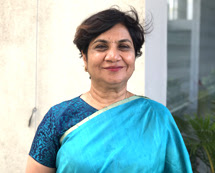

Steering Committee
Dame Wendy Hall
Steering Committee
DBE, FRS, FREng, Regius Professor of Computer Science, Associate Vice President (International Engagement)
Director of the Web Science Institute at the University of Southampton
Noshir Contractor
Steering Committee
Professor of Management & Organizations
Jane S. & William J. White Professor of Behavioral Sciences, McCormick School of Engineering

Shalini Urs
Steering Committee
Founder Chairperson and Trustee
MYRA School of Business, Mysore – 571130